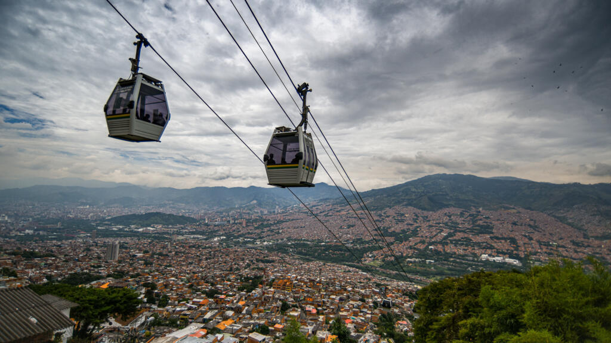
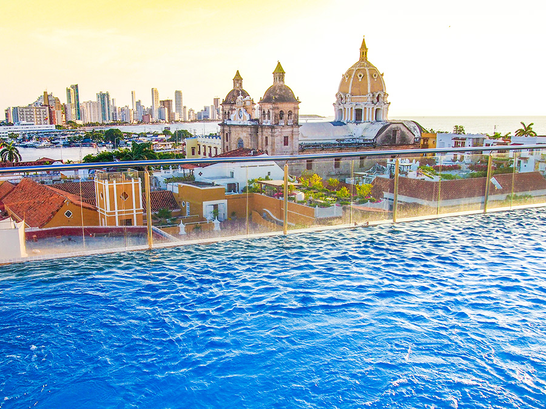
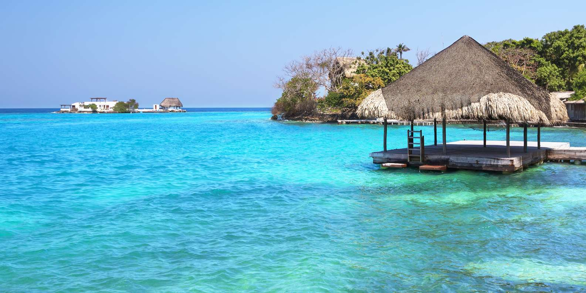

Entre réalisme magique et Caraïbes
Partez pour un voyage en petit groupe à travers les contrastes saisissants de la Colombie. Des hauteurs andines de Bogotá à la chaleur caraïbe de Carthagène, en passant par l'innovation de Medellín et la sérénité des Îles du Rosaire. Un itinéraire sur mesure pour vivre la vraie "Magie Réaliste" chère à Gabriel García Márquez.
Les temps forts de votre voyage

🏛️ Bogotá & les Andes
- Quartier colonial de la Candelaria
- Musée de l'Or (trésors précolombiens)
- Mirador de Monserrate (3 152 m)
- Cathédrale de Sel de Zipaquirá

🌸 Medellín innovante
- Musée d'Antioquia & Place Botero
- Metrocable & Comuna 13
- Musée de la Mémoire
- Excursion à Guatapé

🏰 Carthagène des Indes
- Ville fortifiée classée UNESCO
- Balcons fleuris & places animées
- Quartier bohème de Getsemaní
- Ambiance caraïbéenne unique

🏝️ Îles du Rosaire
- Archipel de corail protégé
- Eaux cristallines & snorkeling
- Détente absolue sur la plage
- Poissons tropicaux multicolores
Votre itinéraire jour par jour
1re semaine : Bogotá & Medellín
Arrivée à Bogotá
Formalités d'arrivée et première découverte à votre rythme du quartier historique de la Candelaria.
Cœur culturel de Bogotá
Visite du célèbre Musée de l'Or et montée au Mirador de Monserrate pour une vue panoramique vertigineuse.
Excursion à Zipaquirá
Découverte de la spectaculaire Cathédrale de Sel, architecture souterraine et lumière mystique.
Cap sur Medellín
Vol intérieur Bogotá → Medellín. Installation et première balade dans la "Ville du Printemps Éternel".
L'art et la résilience
Découverte du Musée d'Antioquia, de la Place Botero, puis trajet en Metrocable vers la Comuna 13.
Excursion à Guatapé
Ascension des 740 marches de la Piedra del Peñol et balade dans le village aux zócalos colorés.
2e semaine : Caraïbes & Îles du Rosaire
Direction Carthagène
Vol Medellín → Carthagène. Installation dans la vieille ville fortifiée.
Carthagène des Indes
Exploration des remparts, du quartier de Getsemaní, des musées et de l'ambiance vibrante de la ville.
Îles du Rosaire
Transfert en bateau vers l'archipel. Snorkeling, farniente sur les plages de sable blanc et eaux turquoises.
Retour et départ
Retour à Carthagène, vol vers Bogotá et vol international de retour vers la France.
Voyagez l'esprit tranquille : Zones sécurisées
Si certains endroits de Colombie restent à éviter, toutes les zones visitées lors de ce voyage sont parfaitement sûres pour les touristes. Nous appliquons les règles de bon sens suivantes :
- Ne pas marcher seul(e) tard le soir dans les rues désertes.
- Faire appeler un taxi (Cabify / Uber) par votre hôtel.
- Éviter les attitudes ostentatoires (bijoux, argent visible).
- Utiliser les distributeurs uniquement en journée, dans des lieux fréquentés.
- Redoubler de vigilance contre les pickpockets dans les transports en commun.
Envie de vivre cette magie ?
Construisons ensemble votre itinéraire sur mesure en petit groupe.
Parlons de votre projet →